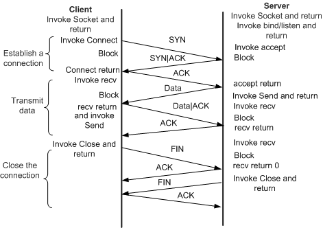

Keyboard shortcuts:
N/СпейсNext Slide
PPrevious Slide
OSlides Overview
ctrl+left clickZoom Element
If you want print version => add '
?print-pdf' at the end of slides URL (remove '#' fragment) and then print.
Like: https://wwwcourses.github.io/...CourseIntro.html?print-pdf
Created for

Iva E. Popova, 2021-2022,

Socket Programming
Socket Programming
Overview
- Socket communication is everywhere. Every HTTP Client/Server Communication rely on socket communication.
- The client application (your browser, for example) uses “client” sockets exclusively. The Web server it’s talking to uses both “server” sockets and “client” sockets.
- Sockets are widely use for any IPC (Inter-Process Communication), especially for cross-platform communication.
Python socket module
- The socket module is a Python's standard interface for the transport layer, and it provides functions for interacting with TCP and UDP, as well as for looking up hostnames through DNS
- A socket is defined by the IP address of the machine, the port on which it listens, and the protocol it uses.
- There are several sockets address families like:
socket.AF_UNIX- used to communicate between processes on the same machine efficiently (specified by UNIX pathname)socket.AF_INET- used for network connections (IPv4)- Sockets are classified into several types, as well:
- stream sockets(socket.SOCK_STREAM) for TCP
- datagram sockets(socket.SOCK_DGRAM) for UDP and others
socket.socket(family=AF_INET, type=SOCK_STREAM)¶
Example: UDP Server
- Note that UDP is a connectionless protocol, so each message send must include destination address
import socket
# open and bind server socket:
server = socket.socket(socket.AF_INET, socket.SOCK_DGRAM)
server.bind(('127.0.0.1', 9999))
# receive data from a client:
msg,address = server.recvfrom(1024)
print(f"Received from {address}: {msg.decode('utf-8')}")
import socket
# open client socket:
client = socket.socket(socket.AF_INET, socket.SOCK_DGRAM)
# send data to specific address:
client.sendto(b'Hello Server',('127.0.0.1', 9999))
How TCP Connection Works
{kind=link}
Creating a Socket
- On Client side:
- On Server side:
PORT = 5050
SERVER_NAME = 'localhost'
SERVER_IP = socket.gethostbyname(SERVER_NAME)
# create an INET (i.e. IPv4), STREAMing (i.e. TCP) socket:
client = socket.socket(socket.AF_INET, socket.SOCK_STREAM)
# reuse address (optional, only for test purposes)
client.setsockopt(socket.SOL_SOCKET, socket.SO_REUSEADDR, 1)
# now connect to the server given with (SERVER_IP, PORT) tupple:
client.connect((SERVER_IP, PORT))
print(f'Client is connected to {(SERVER_IP, PORT)} ')
PORT = 5050
SERVER_IP = socket.gethostbyname(socket.gethostname())
# create an INET (i.e. IPv4), STREAMing (i.e. TCP) socket:
server = socket.socket(socket.AF_INET, socket.SOCK_STREAM)
# reuse address (optional, only for test purposes)
server.setsockopt(socket.SOL_SOCKET, socket.SO_REUSEADDR, 1)
# bind the socket to the host
server.bind((SERVER_IP, PORT))
server.listen()
print(f"Server is listening on {SERVER_IP}")
Host Name Related Methods
socket.gethostname()- returns the host name of the current system under which the Python interpreter is executed.socket.gethostbyname(hostname)- returns the IP address of the given host
Using Sockets on Server
def handle_client(conn, addr):
print(f"[NEW CONNECTION] {addr} connected.")
connected = True
while connected:
msg_length = conn.recv(BUFF_SIZE)
if msg_length:
msg_length = int(msg_length)
msg = conn.recv(msg_length).decode(FORMAT)
if msg == DISCONNECT_MESSAGE:
connected = False
print(f"[{addr}] {msg}")
conn.send("Msg received".encode(FORMAT))
conn.close()
while True:
conn, addr = s.accept()
# better to do with threading
handle_client(conn, addr)
print(f"[ACTIVE CONNECTIONS] {threading.activeCount() - 1}")
Using Sockets on Server
- s.listen() enables a server to s.accept() connections
- accept() blocks and waits for an incoming connection. When a client connects, it returns a new socket object representing the connection and a tuple ((host, port) for IPv4 ) holding the address of the client.
- The newly created socket by s.accept() is used only to communicate with the client. It’s distinct from the listening socket that the server is using to accept new connections
Using Sockets on Client
def send(msg):
message = msg.encode(FORMAT)
msg_length = len(message)
send_length = str(msg_length).encode(FORMAT)
# pad message to be send to BUFF_SIZE
send_length += b' ' * (BUFF_SIZE - len(send_length))
s.send(send_length)
s.send(message)
print(s.recv(BUFF_SIZE)
# send some messages:
while True:
msg = input("Enter a message:")
if msg == '':
send(DISCONNECT_MESSAGE)
else:
send(msg)
Send and Recieve
socket.recv(bufsize[, flags])- socket.recv() @python.orgsocket.send(bytes[, flags])- socket.send() @python.org
Monitoring TCP connection
Monitoring TCP connection
netstat
- If we want to see all TCP connections we can use the
netstatcommand (available on Windows and Linux ) - Useful options:
-a: Show both listening and non-listening sockets.-n: Show numerical addresses instead of trying to determine symbolic host, port or user names.-t: Show only TCP connections.-p: Show the PID and name of the program to which each socket belongs.
netstat -antp
ChatApp Demo
ChatApp Demo
server.py
client.py
Simple HTTP Server with Python
Simple HTTP Server with Python
Project structure
simple_HTTP_server/
├── back-end
│ └── server.py
└── front-end
├── about.html
└── index.html
front-end/index.html
<!DOCTYPE html>
<html lang="en">
<head>
<meta charset="UTF-8">
<meta http-equiv="X-UA-Compatible" content="IE=edge">
<meta name="viewport" content="width=device-width, initial-scale=1.0">
<title>Document</title>
</head>
<body>
<h1>HI</h1>
<a href="about.html">about</a>
<form action="index.html" method="POST">
<input type="text" name="user">
<button>Send</button>
</form>
</body>
</html>
front-end/about.html
<!DOCTYPE html>
<html lang="en">
<head>
<meta charset="UTF-8">
<meta name="viewport" content="width=device-width, initial-scale=1.0">
<title>about </title>
</head>
<body>
<h1>about us</h1>
<a href="index.html">go home</a>
</body>
</html>
back-end/server.py
import socket
from inspect import getsourcefile
import os
import re
PORT = 5050
SERVER_NAME = socket.gethostname()
SERVER_IP = socket.gethostbyname(SERVER_NAME)
BUF_SIZE = 1024
ENCODING = "utf-8"
SCRIPT_PATH = os.path.dirname(getsourcefile(lambda:0))
SERVER_BASE_FOLDER = os.path.dirname(SCRIPT_PATH)
HTTPDOCS = SERVER_BASE_FOLDER+"/front-end"
def process_request(request):
# ------------------------------- parse request ------------------------------ #
req_header = request.split('\n')
first_line=req_header[0].split()
method=first_line[0]
path=first_line[1]
# ------------------------------- make response ------------------------------ #
if path=='/':
path="/index.html"
# mimic that the server is setup to return files only from HTTPDOCS folder:
resource_path = HTTPDOCS+path
if method=="GET":
if not os.path.exists(resource_path):
status_line = "HTTP/1.1 404 Not Found\n"
body=""
else:
with open(HTTPDOCS+path,'r') as fh:
content = fh.read()
status_line = "HTTP/1.1 200 OK\n"
body = content
if method=="POST":
# get data from request body
data = re.split(r'(?:\r?\n){2}', request)[1]
print(data)
user_name=data.split("=")[1]
# do something with data
# return response
status_line = "HTTP/1.1 200 OK\n"
body = f"Welcome {user_name}
"
resp_headers = [
f"Server: Fake Python Server",
f"Content-Length:{len(body)}",
f"Content-Type: text/html; charset=UTF-8"
]
response = status_line + "\n".join(resp_headers) + "\n\n" + body
return response
# ----------------------- init server listening socket ----------------------- #
s = socket.socket(socket.AF_INET, socket.SOCK_STREAM)
s.setsockopt(socket.SOL_SOCKET, socket.SO_REUSEADDR, 1)
s.bind((SERVER_IP, PORT))
s.listen()
print(f"Server is listening on {SERVER_IP}:{PORT}")
# ---------------------------- listen for clients ---------------------------- #
while True:
(conn, addr) = s.accept()
print(f'Client:{addr} connected!')
# ----------------------- get client's request message: ---------------------- #
msg_bytes = conn.recv(BUF_SIZE)
request = msg_bytes.decode(ENCODING)
print(f'request: {request} ')
# ----------------------- return HTTP formatted response ---------------------- #
response = process_request(request)
# print(f'RESPONSE:{response}')
conn.send(response.encode(ENCODING))
# ------------------------- close client's connection ------------------------ #
conn.close()
# if using HTTP1.1 and keep-alive header then make persistent connection